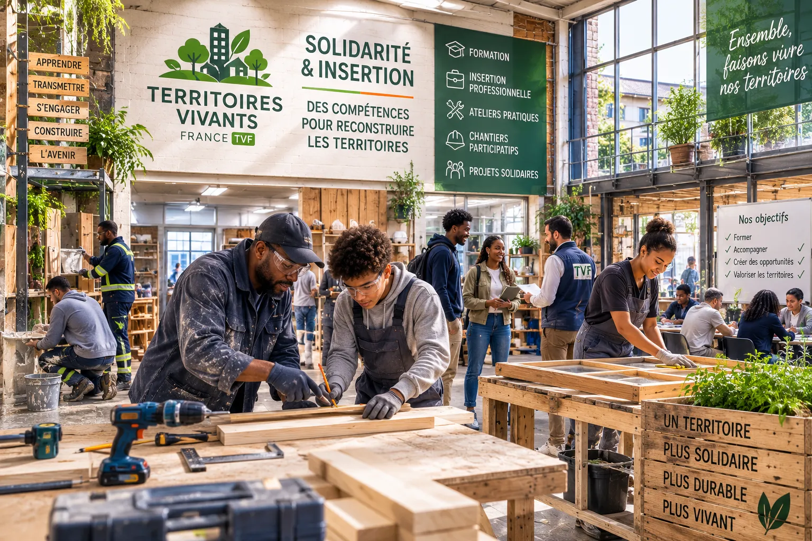

Donner des matériaux
Matériaux neufs, surplus, fins de série, stocks inutilisés ou ressources pouvant être réemployées peuvent être étudiés pour des projets identifiés ou la Matériauthèque Solidaire.
Proposer des matériauxEntreprises et partenaires
Matériaux inutilisés, équipements disponibles, compétences techniques, mécénat, prestations ou partenariats : les entreprises disposent de nombreuses ressources pouvant participer à la revitalisation des logements, commerces, bâtiments et espaces délaissés.
Territoires Vivants France construit avec les acteurs économiques des coopérations concrètes, adaptées à leur activité, à leurs moyens et aux besoins des territoires.
Chaque partenariat fait l'objet d'un échange préalable et d'un cadre adapté.

Engagement économique
Les entreprises jouent un rôle essentiel dans la transformation des territoires. Elles possèdent des savoir-faire, des ressources, des réseaux et des capacités d'intervention utiles à la remise en usage du patrimoine existant.
L'Agence Territoriale de Revitalisation Immobilière facilite la rencontre entre les besoins identifiés sur le terrain et les entreprises souhaitant s'engager dans une démarche territoriale, environnementale ou solidaire.
Notre objectif est de construire des partenariats utiles, réalistes et clairement définis, sans créer d'engagement automatique pour l'entreprise.
Contribuer
Matériaux neufs, surplus, fins de série, stocks inutilisés ou ressources pouvant être réemployées peuvent être étudiés pour des projets identifiés ou la Matériauthèque Solidaire.
Proposer des matériauxMobilier, outillage, équipements techniques, éléments d'aménagement ou fournitures peuvent parfois retrouver une utilité dans un projet territorial.
Proposer un équipementArchitectes, artisans, bureaux d'études, professionnels du bâtiment, du foncier, du numérique, de la logistique ou de l'environnement peuvent contribuer par leur savoir-faire.
Mettre une expertise à dispositionUne entreprise peut mobiliser ses équipes dans le cadre d'une action collective, d'un chantier participatif encadré, d'une opération de réemploi ou d'une journée d'engagement.
Participer à une actionUn soutien financier peut concerner TVF ou une action clairement identifiée. Objectifs, affectation, modalités de suivi et cadre sont précisés avant engagement.
Soutenir un projetVotre entreprise souhaite accompagner un quartier, soutenir une opération de revitalisation ou intégrer une démarche de responsabilité territoriale ?
Construire un partenariat
Ressources recherchées
Territoires Vivants France peut rechercher, selon les projets en cours, différents types de ressources.
Peinture, revêtements, carrelage, bois, portes, fenêtres, sanitaires, éléments électriques, quincaillerie, isolants et finitions.
Mobilier, rayonnages, luminaires, équipements de bureau, rangement, informatique et outillage professionnel.
Diagnostics, études, conseil, architecture, travaux, transport, stockage, communication, numérique et insertion.
Toute proposition est étudiée avant acceptation. TVF peut refuser une ressource qui ne correspond pas aux besoins, qui présente un risque ou dont les conditions de transport, de stockage ou de réemploi ne sont pas adaptées.
Signaler une ressource disponibleMatériauthèque Solidaire
La Matériauthèque Solidaire a vocation à organiser la collecte, le référencement et la mobilisation de matériaux ou d'équipements pouvant être réemployés dans des projets suivis par Territoires Vivants France.
Elle ne constitue pas un espace de distribution libre au public. Les ressources collectées sont destinées en priorité aux opérations identifiées, aux partenariats conventionnés et aux projets territoriaux répondant aux objectifs de TVF.
Pourquoi devenir partenaire ?
Participer à des actions directement liées aux besoins des communes, des quartiers et de leurs habitants.
Étudier le réemploi de matériaux, équipements ou stocks qui pourraient autrement être immobilisés ou éliminés.
Associer vos équipes à une démarche concrète favorisant coopération, transmission des compétences et engagement collectif.
Favoriser la réutilisation du patrimoine bâti et des ressources existantes plutôt que la consommation systématique de nouveaux matériaux.
Participer à des projets susceptibles de mobiliser entreprises, artisans, associations et professionnels du territoire.
Relier votre politique sociale, environnementale ou territoriale à des actions suivies et clairement identifiées.
Coopération encadrée
Avant toute intervention, TVF échange avec l'entreprise afin de préciser la nature de la contribution, les ressources ou compétences mobilisées, le territoire ou le projet concerné, les responsabilités, les conditions de transport, de stockage ou d'intervention, les règles de communication, la durée du partenariat et les modalités de suivi.
Selon la nature de la coopération, le partenariat peut être formalisé par une convention de partenariat, une convention de don, une convention de mise à disposition, un accord de mécénat lorsque les conditions sont réunies, une commande, une prestation ou un programme d'actions partagé.
Aucun partenariat n'est considéré comme acquis avant sa validation et sa formalisation par les parties concernées.
Selon la nature de l'opération, la situation de l'association et les conditions prévues par la réglementation, certains soutiens peuvent relever du mécénat d'entreprise.
L'éligibilité à une réduction fiscale et la délivrance d'un reçu fiscal ne doivent jamais être considérées comme automatiques. Elles dépendent du cadre juridique applicable et de la nature réelle de la contribution. L'entreprise reste responsable de l'appréciation fiscale de sa situation et peut se rapprocher de son conseil habituel.
Échanger sur les modalités du partenariatParcours partenaire
Profils d'entreprises
Travaux, rénovation, matériaux, diagnostics, conseils techniques et transmission de savoir-faire.
Fins de série, mobilier, équipements, stocks non utilisés et soutien aux centralités commerciales.
Expertise immobilière, foncière, technique ou territoriale et participation à des projets de transformation.
Matériaux, logistique, équipements, réemploi, mécénat de compétences ou économie circulaire.
Conseil, communication, informatique, juridique, comptabilité, formation et accompagnement opérationnel.
Soutien à des programmes territoriaux, mécénat, appels à projets et mobilisation de collaborateurs.
Engagements TVF
Lancement
Territoires Vivants France développe actuellement son réseau d'entreprises, d'artisans et de partenaires techniques autour de son territoire pilote.
Les projets, contributions acceptées et résultats obtenus seront présentés dans cette rubrique après leur mise en œuvre et leur validation.
Devenir l'un des premiers partenairesQuestions fréquentes
Tout matériau ou équipement susceptible d'être utile à un projet peut être présenté. Son acceptation dépend de son état, de sa conformité, de son utilité et des possibilités de transport ou de stockage.
Non. Chaque proposition est étudiée avant acceptation. TVF peut refuser une contribution inadaptée, dangereuse, trop dégradée ou ne répondant à aucun besoin identifié.
Cela dépend du partenariat. Les responsabilités et les coûts de transport sont définis avant l'acceptation de la contribution.
Oui, lorsqu'un projet le permet et que les compétences, assurances, autorisations et règles de sécurité nécessaires sont réunies.
Une affectation précise peut être envisagée lorsqu'elle est compatible avec les besoins de TVF et les conditions du partenariat.
L'utilisation du nom, du logo et des éléments de communication de l'entreprise est définie avec son accord préalable.
Les documents remis dépendent de la nature juridique de l'opération. Une convention, une attestation de remise ou un autre document de suivi peut être établi lorsque cela est approprié.
Non. L'éligibilité dépend de la réglementation, de la situation de TVF et de la nature de la contribution.
Partenariat
Votre entreprise dispose de matériaux, d'équipements, de compétences ou souhaite soutenir une action de revitalisation ? Présentez-nous votre proposition.